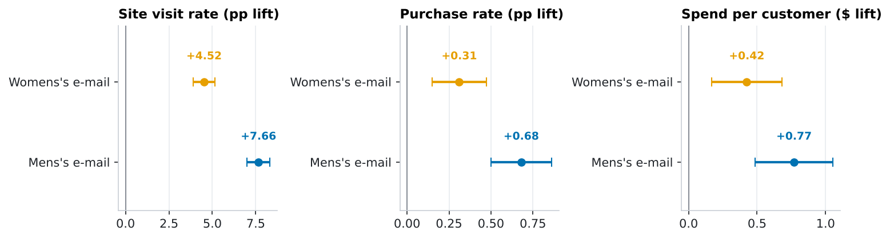
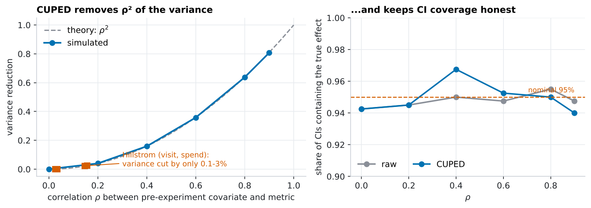
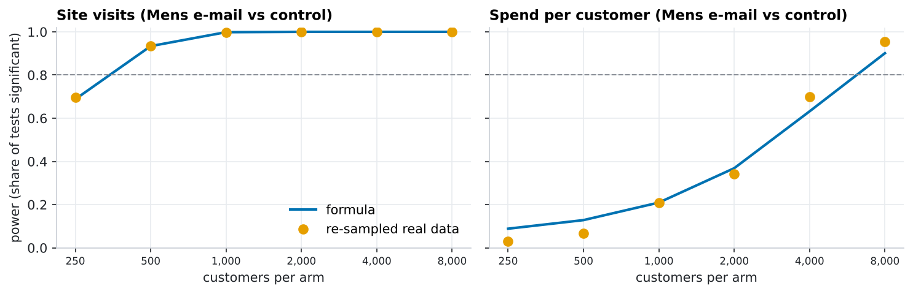
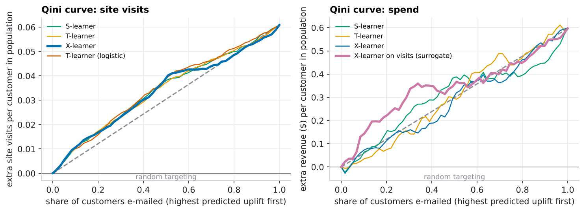
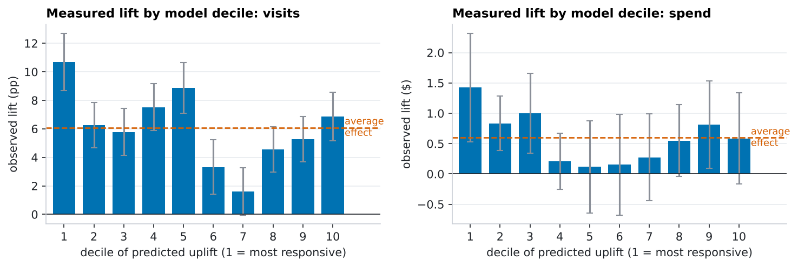
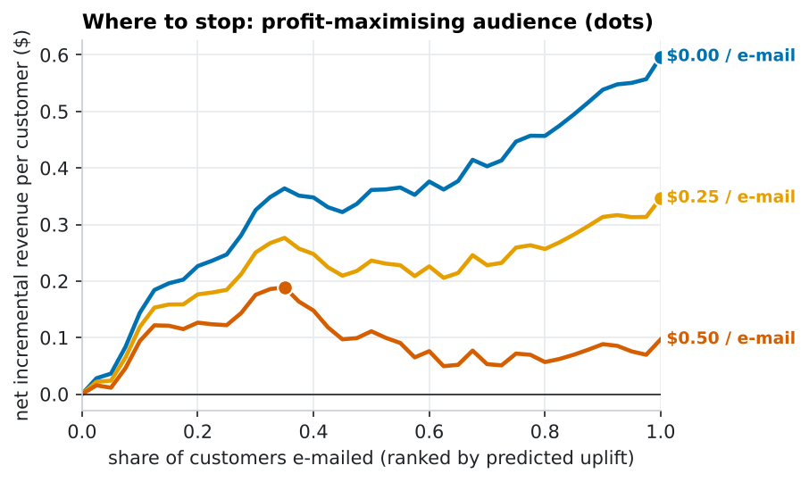
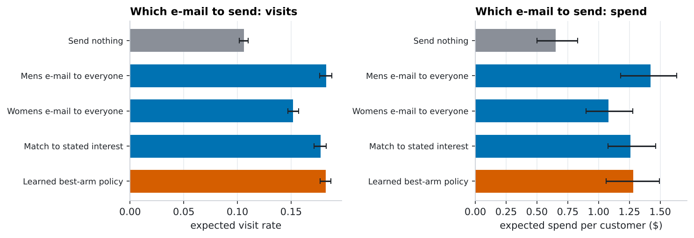

Did the e-mail work, and who should get it?
An end-to-end analysis of a real randomized e-mail campaign (64,000 customers, Hillstrom MineThatData): trustworthy A/B read-out, CUPED variance reduction, power analysis, and uplift models that decide who to target. Everything is reproducible Python, tested, and the sample-size calculator at the end runs live in your browser.
TL;DR. The campaign clearly works and the men's creative beats the women's ($0.35 more spend per customer, p = 0.030). CUPED is nearly useless on this dataset because the only pre-experiment covariates barely predict spend, and I show with simulation exactly when it does pay off. Uplift models find real, but moderate, heterogeneity in visit response; they can't reliably learn it from raw spend, and a per-customer choice of creative does not beat simply sending the men's e-mail to everyone.
The experiment
In 2008 Kevin Hillstrom's retailer randomly assigned 64,000 customers to a men's-merchandise e-mail, a women's-merchandise e-mail, or no e-mail, and tracked the following two weeks: site visit, purchase, and dollars spent. Covariates (all measured before the send): months since last purchase, prior-year spend, whether the customer buys men's/women's products, new-vs-existing, ZIP type and acquisition channel.
1 · Can I trust the randomization?
Before reading any result: a sample-ratio-mismatch test on the arm sizes (21,306, 21,307, 21,387) gives χ² p = 0.90, so no sign of broken assignment. Covariate balance is excellent: the largest standardized mean difference between any e-mail arm and control is 0.009 (rule of thumb: worry above 0.1).
2 · Did it work?

| Arm | Metric | Control | Effect (95% CI) | Relative | p (Holm) | |
|---|---|---|---|---|---|---|
| Men's e-mail | Site visit | 10.62% | 18.28% | +7.66 pp ([+7.00 pp, +8.32 pp]) | +72% | < 0.001 |
| Men's e-mail | Purchase | 0.57% | 1.25% | +0.68 pp ([+0.50 pp, +0.86 pp]) | +119% | < 0.001 |
| Men's e-mail | Spend / customer | $0.65 | $1.42 | $0.77 ([$0.49, $1.05]) | +118% | < 0.001 |
| Women's e-mail | Site visit | 10.62% | 15.14% | +4.52 pp ([+3.89 pp, +5.16 pp]) | +43% | < 0.001 |
| Women's e-mail | Purchase | 0.57% | 0.88% | +0.31 pp ([+0.15 pp, +0.47 pp]) | +54% | < 0.001 |
| Women's e-mail | Spend / customer | $0.65 | $1.08 | $0.42 ([$0.17, $0.68]) | +65% | 0.001 |
Six hypotheses (2 e-mails × 3 metrics) are tested, so p-values are Holm-adjusted. Both e-mails lift visits, purchases and spend; the men's e-mail beats the women's on all three (spend difference $0.35, 95% CI [$0.03, $0.66]). Spend is the noisy one: 99% of customers spend nothing, so the standard deviation ($15) dwarfs the mean.
3 · CUPED: variance reduction from pre-experiment data
CUPED (Deng et al., 2013) subtracts the part of the outcome that a pre-experiment covariate already explains: Y_adj = Y − θ·(X − mean(X)). It leaves the effect estimate unbiased and cuts variance by ρ², the squared correlation between covariate and outcome. I tried prior-year spend alone, all pre-treatment covariates together, and a cross-fitted gradient-boosting prediction (CUPAC).
| Metric | Covariate set | √R² | Variance cut | Std. error | SE shrink |
|---|---|---|---|---|---|
| visit | Raw (no adjustment) | – | 0.0% | 0.0034 | 0.0% |
| visit | History only (classic CUPED) | 0.067 | 0.4% | 0.0034 | 0.2% |
| visit | All pre-treatment covariates | 0.156 | 2.4% | 0.0033 | 1.2% |
| visit | ML prediction (CUPAC) | 0.162 | 2.6% | 0.0033 | 1.3% |
| spend | Raw (no adjustment) | – | 0.0% | 0.145 | 0.0% |
| spend | History only (classic CUPED) | 0.021 | 0.0% | 0.145 | 0.0% |
| spend | All pre-treatment covariates | 0.035 | 0.1% | 0.145 | 0.1% |
| spend | ML prediction (CUPAC) | 0.016 | 0.0% | 0.145 | 0.0% |
Honest result: on spend, CUPED shrinks standard errors by roughly 0.1%, which is nothing, and even an ML covariate does no better (0.02%). Prior-year spend correlates only ~0.02 with two-week spend. For visits the gain is a still-small 2.4%. CUPED is a tool for metrics with a strong pre-period analogue (e.g. last month's revenue to predict this month's), not magic.

4 · Power analysis
How big an effect could this experiment have detected? With 21,306 customers per arm:
| Metric | Control level | MDE (80% power) | MDE relative | Observed (Mens) | Observed relative |
|---|---|---|---|---|---|
| Site visit | 10.62% | 0.85 pp | 8% | 7.66 pp | 72% |
| Purchase | 0.57% | 0.22 pp | 39% | 0.68 pp | 119% |
| Spend / customer | $0.65 | $0.41 | 62% | $0.77 | 118% |
The site-visit lift was ~9× the minimum detectable effect, so visits were overwhelmingly powered. Spend is the opposite: the men's e-mail's 118% lift is only 1.9× the 62% MDE, and the women's e-mail's 65% lift is barely above its 56% MDE (1.2×). That is why the spend p-values are weaker even though the dollar effects are large: a test with 80% power at the MDE will often miss effects that size. To check the formulas against reality I repeatedly subsampled the real data and counted how often the test fired:

For planning a new test at this campaign's baseline purchase rate (0.57%), sample sizes are brutal for rare events:
| Relative lift to detect | Users per arm | …with CUPED (ρ≈0.55) |
|---|---|---|
| +5% | 1,117,393 | 782,175 |
| +10% | 286,118 | 200,283 |
| +20% | 74,911 | 52,438 |
| +30% | 34,795 | 24,357 |
| +50% | 13,606 | 9,524 |
Plug in your own numbers in the live calculator →
5 · Uplift modeling: who should get the e-mail?
The average effect says nothing about which customers respond. Uplift (CATE) models estimate the effect per customer; I compare S-, T- and X-learners with gradient boosting, plus a plain logistic-regression T-learner as a simple baseline. Because assignment was randomized, I can evaluate them without modelling assumptions:
- Out-of-fold scores only. 5-fold cross-fitting, repeated over 5 seeds and averaged, so no customer is scored by a model that saw them.
- Qini curve: rank customers by predicted uplift, then measure real treated-vs-control outcomes within the top-k slice. Area above the random-targeting line = Qini coefficient.
- Model choice fixed in advance: the X-learner (built for unbalanced 2:1 assignment: 2/3 of customers got an e-mail). Differences between models are within noise.
Target: site visits (dense, 15% positive)
| Model | Qini coefficient | 95% CI | Top-30% gain (visits/customer) | Random 30% |
|---|---|---|---|---|
| S-learner | 0.0038 | [0.0021, 0.0053] | 0.0239 | 0.0183 |
| T-learner | 0.0037 | [0.0021, 0.0051] | 0.0226 | 0.0183 |
| X-learner ★ | 0.0034 | [0.0018, 0.0047] | 0.0226 | 0.0183 |
| T-learner (logistic) | 0.0044 | [0.0028, 0.0061] | 0.0248 | 0.0183 |
Every model beats random targeting (CIs exclude 0), and the simple logistic model is as good as the boosted trees. Targeting the top 30% yields 0.025 extra visits per customer vs 0.018 from a random 30% (+36%).


Target: spend (99% zeros, heavy tail)
| Model | Qini coefficient | 95% CI | Top-30% gain ($/customer) | Random 30% |
|---|---|---|---|---|
| S-learner | 0.001 | [-0.044, 0.063] | 0.232 | 0.179 |
| T-learner | 0.001 | [-0.052, 0.063] | 0.145 | 0.179 |
| X-learner | -0.014 | [-0.070, 0.058] | 0.154 | 0.179 |
| X-learner on visits (surrogate) ★ | 0.043 | [-0.017, 0.115] | 0.326 | 0.179 |
Models trained directly on spend are indistinguishable from noise: their Qini coefficient flips sign from seed to seed (seed-to-seed s.d. ≈ 0.021 vs. a signal of ~0). The workable approach is a surrogate: rank on the dense visit-uplift score and evaluate on dollars. That gives $0.33 per customer from the top 30% vs $0.18 at random, but its Qini CI [-0.017, 0.115] still includes zero: suggestive, not proven, with 64k customers and this much noise.
Who are the high-uplift customers?
| Uplift quintile | Predicted lift | Buys women's | Buys men's | New customer | Months since purchase | Prior-year spend |
|---|---|---|---|---|---|---|
| Q1 | 8.6 pp | 100% | 43% | 68% | 5.5 | $416 |
| Q2 | 7.1 pp | 100% | 1% | 53% | 6.4 | $164 |
| Q3 | 6.1 pp | 73% | 32% | 34% | 5.1 | $233 |
| Q4 | 4.6 pp | 1% | 99% | 49% | 6.4 | $161 |
| Q5 | 4.0 pp | 1% | 100% | 47% | 5.4 | $235 |
The most responsive customers are those who buy women's merchandise and new customers, while men's-only buyers show the smallest predicted incremental response. Uplift is not the same as response rate: it ranks customers by how much the e-mail changes their behaviour, which need not be the customers who respond most in absolute terms.
Where to stop? Targeting under a cost per e-mail

| Cost per e-mail | E-mail everyone | Best audience share → net / customer* | Top 30% minus everyone (95% CI) |
|---|---|---|---|
| $0.00 | $0.60 | 100% → $0.60 | -$0.27 [-$0.45, -$0.08] |
| $0.25 | $0.35 | 100% → $0.35 | -$0.10 [-$0.27, $0.09] |
| $0.50 | $0.10 | 35% → $0.19 | $0.08 [-$0.10, $0.27] |
*Audience size chosen on the same data, so it's optimistic; the fixed 30% column is the cleaner comparison. Revenue, not margin: scale the cost accordingly.
At a negligible cost per e-mail the answer is simply "e-mail everyone": the average effect (~$0.60/customer) dwarfs it, and holding back 70% of customers forgoes $0.27 each. Targeting only starts to look attractive once contact costs approach the average incremental revenue (expensive channels, discounts, unsubscribe cost). Even at $0.50 the estimated gain from the top 30% ($0.08/customer) has a confidence interval that includes zero, so this data supports the mechanics of cost-aware targeting better than a firm business conclusion.
6 · Which creative to send each customer?
Three arms allow a bigger question: for each customer choose none / men's / women's e-mail. A T-learner per arm (cross-fitted) predicts the outcome under each and picks the best. Policies are valued with inverse-propensity weighting (each arm had probability 1/3), with bootstrap CIs.

| Policy | Expected spend / customer | 95% CI |
|---|---|---|
| Send nothing | $0.65 | [$0.50, $0.83] |
| Mens e-mail to everyone | $1.42 | [$1.18, $1.64] |
| Womens e-mail to everyone | $1.08 | [$0.90, $1.28] |
| Match to stated interest | $1.26 | [$1.08, $1.46] |
| Learned best-arm policy | $1.28 | [$1.06, $1.49] |
Negative result worth reporting: the learned policy does not beat "send the men's e-mail to everyone" (spend difference -$0.14, 95% CI [-$0.30, $0.02]; visits -0.03 pp, CI [-0.4, +0.4] pp). Personalization needs enough signal to pay for its estimation noise; here the single best creative captures nearly all of the value.
Method notes & limitations
- "Treated" in the uplift section pools both e-mails (any e-mail vs none); the policy section separates them.
- CUPED θ is estimated on pooled data and then treated as fixed (standard; negligible error at this n). The covariates are strictly pre-treatment.
- Outcomes are a single two-week window; novelty, fatigue and long-run effects are invisible. Spend is revenue, not profit.
- Uplift CIs bootstrap customers while holding the out-of-fold scores fixed, so they ignore model-training variability; I show seed-to-seed spread separately.
- Data: Hillstrom, MineThatData E-Mail Analytics and Data Mining Challenge (2008).
Reproduce
git clone https://github.com/kuanyishen/experimentation-toolkit.git && cd experimentation-toolkit
pip install -e ".[dev]"
python analysis/run_analysis.py # downloads data, writes results + figures (~3 min)
python analysis/build_site.py # renders this page
pytest # statistical checks + JS/Python parity